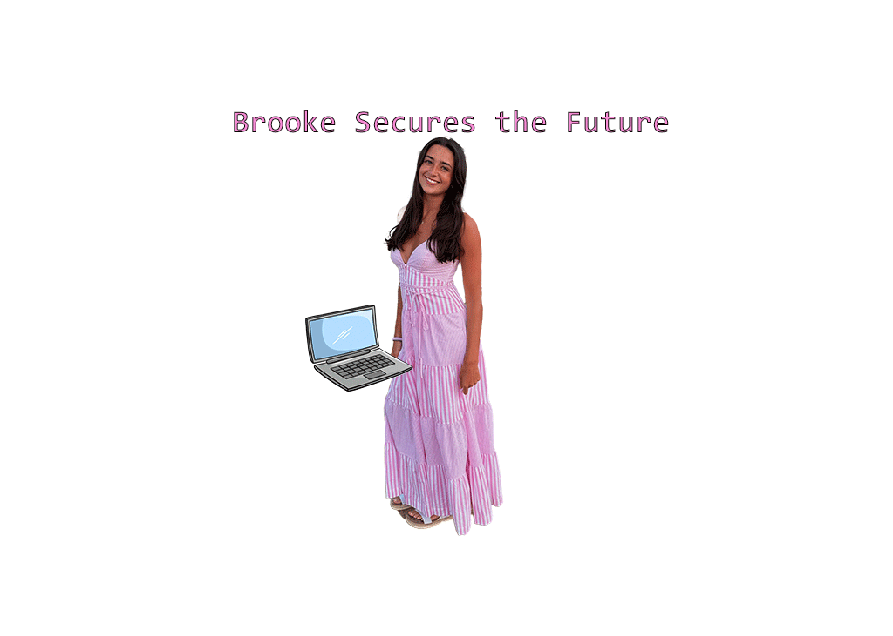

Brooke Danyluk's Biography
My name is Brooke Danyluk. My major is Information Management and Technology with a concentration in Security, coupled with a minor in Global Security Studies. I am interested in being a cyber analyst. A few of my skills include RStudio, Adobe Illustrator and Photoshop, Python, and SQL.
Outside of school, I enjoy going to the gym, hanging out with friends, and shopping. My favorite show right now is The Summer I Turned Pretty. As a senior, I am excited for this school year and interested in learning more about web development.
Personal Info
I have three brothers and I live in New York.
Personal Hobbies
- Painting
- Running
- Reading
- Baking